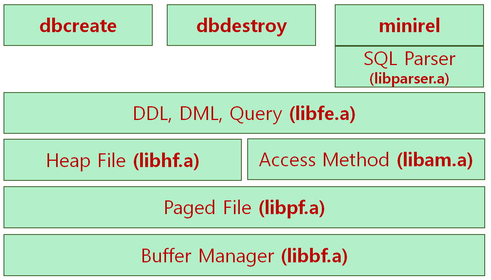

§ 1. Introduction
Throughout the semester, you will be working on a project to build a simplified relational database system called MiniRel. The implementation of a single-user MiniRel is composed of five layers: the buffer pool (BF) layer, the paged file (PF) layer, the heap file (HF) layer, the access method (AM) layer, and the front-end (FE) layer. The BF layer is the lowest in the layered architecture of MiniRel. The HF and AM layers are located at the same architectural level on top of the PF layer, with the FE layer being the highest level.
Part I (the BF layer) and Part II (the PF layer) involve the implementation of code to manage a buffer pool and to manipulate files that contain a sequence of pages, respectively. Part III (the HF layer) involves the implementation of heap file management to provide the abstraction of random and sequential access to fixed-length records stored in files. Part IV (the AM layer) involves implementing procedures for -tree index structures to speed up associative access to records. For Part V (the FE layer), this layer implements catalog management, data definition language (DDL), and data manipulation language (DML). To help you implement the Part V quickly, a parser to parse user commands will be provided.
|  |
When all the five parts of the MiniRel project are completed, the final deliverables will produce the followings:
Three executables: dbcreate, dbdestroy and minirel,
Six function libraries: libbf.a, libpf.a, libhf.a, libam.a, libfe.a, and libparser.a.
However, some of the deliverables may be provided or excluded from the scope of the project.
§ 1.1. Guidelines
We will maintain a public directory for the project (or an archive of the entire directory tree will be provided). The public directory will contain a top-level Makefile for the entire MiniRel system generation, a sub-directory for XX.h header files, a sub-directory XX for each part of the project where XXtest.c files and a sample Makefile are included for you to test your code.
You can copy everything in the public directory to your working directory, and modify them as needed except for the header files. You can add your own header files, but are not allowed to modify any header file provided in the public directory. We will use the original header files in the public directory to build your function library and test your project. You may want to define an environment variable MINIREL_HOME to utilize the Makefiles in the public directory. It can be done as follows. The exact syntax may be different.
% setenv MINIREL_HOME YOUR_WORKING_DIRECTORY
§ 1.2. Project Requirements
Each part of the MiniRel project will produce a function library libXX.a associated with one of the five layers BF, PF, HF, AM, and FE. For example, in the BF layer, the library will be called libbf.a, and will be made of the functions defined for the BF layer.
All the code for each layer must be in a directory of its own. An external header file provided for each layer (e.g., bf.h for the BF layer) contains the layer's function prototypes and exported types. This header file will then be included (later on) in client layers, which need to use the layer's functions. If you need to augment the external header file, you can create your own internal header files instead of modifying the external header file.
A Makefile with the following targets is required for each part:
all: Makes all your system.
XXtest: Produces an executable file XXtest. We will provide a file XXtest.c for each layer, which contains a few test scenarios. However, we do not guarantee that the test scenarios will examine every aspect of your code, or that they will detect every bug in your code. We strongly suggest that you write your own test cases (perhaps based on ours) to test your code more thoroughly. We will use our own XXtest.c, different from the one provided, to test and grade your system.
libXX.a: Produces the XX layer function library.
clean: Gets rid of *.o files, the libXX.a library and the executable XXtest.
The Makefile provided in the BF layer should be used as an example of how your Makefile for another layer should look. When grading, the TA will do the following:
% make clean % make XXtest % XXtestSo, it is highly recommended that you try this yourself to make sure your Makefile works properly.
Use the GNU gcc compiler version 4 or higher with -ansi -pedantic compilation switch for strict ANSI Standard C programming.
Note that part of your grade will depend on the clarity and documentation of your code. Source code documentation is very controversial. Use the source codes that are provided in the public directory as an example of the kind of documentation we expect. In general a description at the beginning of each function must be present. In this description, you must provide information about the parameters of the function, the value the function returns, and a general idea of what the function implements. Also comment major sections of code to describe what they are doing. Please choose meaningful names for your functions and variables, and use #define to identify any constants in your code. No Magic Numbers in your code!!
A system report. This report should explain the implementation approach you followed, including overall techniques, important data structures, tricky design decisions, and anything else that you may want us to know. This report should be a short one (2-3 pages) but should be well written and spell-checked.
§ 1.3. Project Groups
This project is to be done in a group of two or three students, and there will be no singles without instructor's permission. Choose your group members very carefully, as you will be working together throughout the semester. Try to pick up partners who are equally interested in doing a good job, as otherwise problems are sure to arise later on.
§ 1.4. Project Schedules and Weights
| Phase | Functional Layer | Weight | Due date |
| Part I | Buffer Pool (BF) Layer | 5% | Apr/11/2017, Tuesday |
| Part II | Paged File (PF) Layer | 10% | Apr/11/2017, Tuesday |
| Part III | Heap File (HF) Layer | 10% | May/23/2017, Tuesday |
| Part IV | Access Method (AM) Layer | 15% | May/23/2017, Tuesday |
| Part V | Front-End (FE) Layer | +15% | TBA |
| Optional | Benchmarking | +5% | TBA |
§ 1.5. Submission and Grading Policy
Each part of the project must be submitted electronically at the SNU eTL site. No paper copies nor email submission will be accepted. If your code has more than one source file, submit them as a single .zip or .tar archive (e.g., XX.tar), so that TA can download it quickly.
Each part of the project is due by 11:00pm on the specified date. An electronic copy report for each part is also due at the same time. A late project may be turned in within 24 hours after the deadline for a 10% penalty (i.e., 10% deduction of your credits). No project late for more than 24 hours will be accepted unless a valid excuse (e.g., documented illness or family emergency) is given to the instructor prior to the due date. For fairness, this policy will be strictly enforced.
Your code will be tested and graded only on a Linux platform to verify/evaluate its completeness, correctness and efficiency. Be certain that your program runs correctly on a Linux platform before you submit it. Testing your code thoroughly before turning in is very important, as even a small bug arising early in a test script can result in subsequent tests failing (and hence, a poor grade). In cases where a simple fix (i.e., several lines of code at most) can help a project make it through later parts of a test script, re-grading will be allowed. Such re-grading, however, will incur a 10% penalty (i.e., 10% deduction of your credits after re-grading). Thus, in order to get full credit for your work, you must do a good job of testing your project before you turn it in. We will decide which changes constitute a simple fix. A non-working project may be turned in for partial credits.
Except for special circumstances, all the members in a group will receive an identical grade for each part of the project. Project demonstration may be administered shortly after the final stage of the project. If we decide to do it, all group members will be required to attend the demonstration. One of the purposes of project demonstration will be to determine whether all the group members were indeed equal participants in the project. If it is obvious at the time that any group member did significantly more work than others, we may adjust your grades accordingly up to the full 100% in extreme cases. Please do not make us do this.
§ 1.6. Benchmarking
Benchmarking a database server is an important part of server development. Considerable time is routinely devoted to fine tuning a database engine and extracting better performance out of it. You will be given a sample database and a suite of queries based on the Wisconsin benchmark. Performance of your MiniRel system will be measured for the queries with respect to both computation and I/O.
You can get full credits for this part of the MiniRel project if your MiniRel system yields more than just acceptable performance from the benchmark. For example, no more than 20% slower than our own implementation or among the top three contenders.